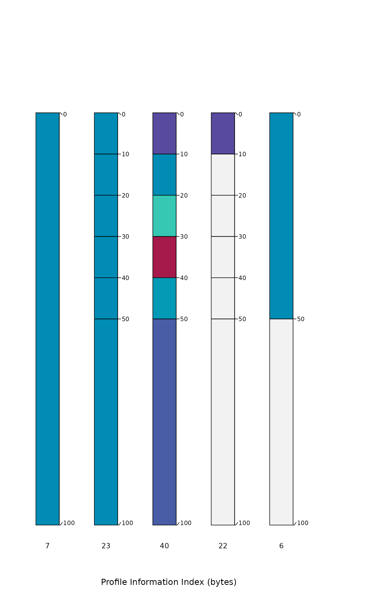

A simple index of "information" content associated with individuals in a SoilProfileCollection object. Information content is quantified by number of bytes after gzip compression via memCompress().
profileInformationIndex(
x,
vars,
method = c("median", "mean", "sum"),
baseline = TRUE,
useDepths = TRUE,
numericDigits = 4
)SoilProfileCollection object
character vector of site or horizon level attributes to consider
character: aggregation method, information content evaluated over vars: 'median', 'mean', or 'sum'
logical, compute ratio to "baseline" information content, see details
logical, include horizon depths in vars
integer, number of significant digits to retain in numeric -> character conversion
a numeric vector of the same length as length(x) and in the same order, suitable for direct assignment to a new site-level attribute
Information content via compression (gzip) is the central assumption behind this function: the values associated with a simple soil profile having few horizons and little variation between horizons (isotropic depth-functions) will compress to a much smaller size than a complex profile (many horizons, strong anisotropy). Information content is evaluated a profile at a time, over each site or horizon level attribute specified in vars. Values are aggregated to the profile level by method: median, mean, or sum. The baseline argument invokes a comparison to the simplest possible representation of each depth-function:
numeric: replication of the mean value to match the number of horizons with non-NA values
character or factor: replication of the most frequent value to match the number of horizons with non-NA values
The ratios computed against a "simple" baseline represent something like "information gain", ranging from 0 to 1. Larger baseline ratios suggest more complexity (more information) associated with a soil profile's depth-functions. Alternatively, the total quantity of information (in bytes) can be determined by setting baseline = FALSE and method = 'sum'.
# simulate three profiles of increasing complexity
p1 <- data.frame(id = 1, top = 0, bottom = 100, p = 5)
p2 <- data.frame(
id = 2, top = c(0, 10, 20, 30, 40, 50),
bottom = c(10, 20, 30, 40, 50, 100),
p = rep(5, times = 6)
)
p3 <- data.frame(
id = 3, top = c(0, 10, 20, 30, 40, 50),
bottom = c(10, 20, 30, 40, 50, 100),
p = c(1, 5, 10, 3, 6, 2)
)
# combine and upgrade to SPC
z <- rbind(p1, p2, p3)
depths(z) <- id ~ top + bottom
# visual check
plotSPC(z, color = 'p')

# compute information index several ways
profileInformationIndex(z, vars = c('p'), method = 'sum')
#> 1 2 3
#> 3.000000 4.375566 4.804137
profileInformationIndex(z, vars = c('p'), method = 'mean')
#> 1 2 3
#> 0.0000000 0.4585219 0.6013790
profileInformationIndex(z, vars = c('p'), method = 'mean', baseline = FALSE)
#> 1 2 3
#> 8.666667 19.666667 22.333333
profileInformationIndex(z, vars = c('p'), method = 'sum', baseline = FALSE)
#> 1 2 3
#> 29 62 70